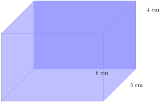
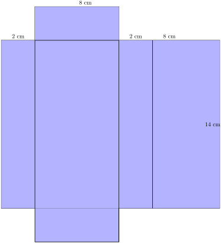
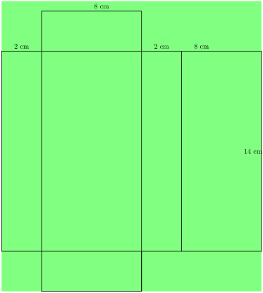
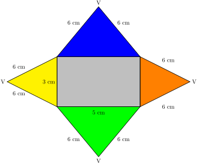

Section 2.7 Surface Area and Volume of Solids
Surface Area.
Surface area is the total area of the exposed or outer surfaces of a prism.
🔹A right prism is a geometric solid that has a polygon as its base and vertical faces perpendicular to the base. The base and top surface are the same shape and size. It is called a “right” prism because the angles between the base and faces are right angles.
🔹 The name given to the solid that is unfolded like this is called a net. When a prism is unfolded into a net, we can clearly see each of its faces.
🔹 We can thereby clearly calculate the surface area by finding the area of each faces and add them all together to get the surface area of the Prism.
🔹 For example, If we are given a cylinder, the top and bottom faces are circles and the curved area is like a rectangle. So when finding it’s surface area we find the area of the two circles and the area of the rectangle then we dd all these areas al together to compute yhe cylinder’s surface area.
Subsection 2.7.1 Surface area of Prisms
🔹 A prism is a Geometric object with two identical, parallel bases and straight sides connecting them.
🔹A right prism is a geometric solid that has a polygon as its base and vertical faces perpendicular to the base. The base and top surface are the same shape and size. It is called a “right” prism because the angles between the base and faces are right angles.
🔹 Recall our defination for surface area which is the total area of the exposed or outer surfaces of a prism.
🔹Examples of right prisms are; a cylinder, a rectangular prism, a cube and a triangular prism.
\(\textbf{Types of Prisms}\text{:}\) Rectangular and a cube prism, Triangular Prisms and Cylinders.
\(\txtbf{Surface Area of a cube}\)
A cube is unfolded to into a net made up of 6 identical squares.
Example 2.7.1.
(a). Sketch the net of the cube
(b). Work out the surface area of the cube from its net.
Solution.
(a). \({\color{blue} \text{The net of the cube is as shown.}}\)
(b). \({\color{blue} \text{The surface area of the cube.}}\)
\({\color{green} \text{Method 1.}}\)
\begin{align*}
\text{The area of one face=} \amp 8 cm \times 8 cm\\
= \amp 64 cm^2\\
\text {There are 6 surfaces.Therefore the surface area of the cube is;} \amp \\
= \amp 6 \times 64 cm^2\\
= \amp 384 cm^2
\end{align*}
\({\color{green} \text{Method 2.}}\)
\begin{align*}
\text {Area of a square=} \amp length \times width\\
\text {Area of square A}= \amp8cm \times 8 cm \\
= \amp64 cm^2 \\
\text {Area of square B}= \amp8cm \times 8 cm \\
= \amp64 cm^2 \\
\text {Area of square C}= \amp8cm \times 8 cm \\
= \amp64 cm^2 \\
\text {Area of square D}= \amp8cm \times 8 cm \\
= \amp64 cm^2 \\
\text {Area of square E}= \amp8cm \times 8 cm \\
= \amp64 cm^2 \\
\text {Area of square F}= \amp8cm \times 8 cm \\
= \amp64 cm^2 \\
\text{ surface area}=\amp64 cm^2 +64 cm^2 +64 cm^2 +64 cm^2 +64 cm^2 +64 cm^2 \\
= \amp 384 cm^2
\end{align*}
Subsection 2.7.2 Surface area of a cuboid(Rectangular Prism}
\(\textbf{Rectangular Prism;}\) It has a rectangle at its base. A cube is a rectangular prism with all sides of equal length.
The surface area of a cuboid is the total area of all six faces of the cuboid.
When learning about area, we calculated the surface area of a cuboid. Since the opposite faces of a cuboid are identical, the surface area of a cuboid can be calculated by finding the area of each face and then adding them together.
In this section, we will calculate the surface area of a cuboid from their nets.
Activity 2.7.1.
Surface area of a Cuboid
View the net of a cuboid in order to understand how to find the surface area of the cuboid.
Activity 2.7.2.
Surface area of Cuboid
To explore the net and formula to find the surface area of cuboid.
Example 2.7.2.
The figure below shows a cuboid.

(a). Sketch the net of the cuboid.
(b). Work out the surface area of the cuboid from its net.
Solution.
(a).The figure below shows the net of the cuboid.

\begin{align*}
\text {(a). Area of a rectangle} = \amp length \times width\\
\text {Area of rectangle A}= \amp6 cm \times 5 cm \\
= \amp 30 cm^2\\
\text{Area of rectangle B}= \amp6 cm \times 4 cm \\
= \amp 24 cm^2\\
\text{Area of rectangle C}= \amp6 cm \times 5 cm \\
= \amp 30 cm^2\\
\text{Area of rectangle D}= \amp6 cm \times 4 cm \\
= \amp 24 cm^2\\
\text{Area of rectangle E}= \amp4 cm \times 5 cm \\
= \amp 20 cm^2\\
\text{Area of rectangle F}= \amp4 cm \times 5 cm \\
= \amp 20 cm^2\\
\text{Surface area}= \amp30 cm^2+24 cm^2+30 cm^2+24 cm^2+20 cm^2+20 cm^2 \\
= \amp148 cm^2
\end{align*}
Example 2.7.3.
Find the surface area of the following rectangular prism:
Solution.
Step 1: Sketch and label the net of the prism.

Step 2: Find the areas of the different shapes in the ne
\begin{align*}
\text{large rectangle} = \amp \text{ perimeter of small rectangle} \times \text{length} \\
= \amp (3+8+3+8)\text{cm} \times 14\text{cm} \\
= \amp 22\text{cm} \times 14\text{cm} \\
= \amp 308\text{cm}^2
\end{align*}
\begin{align*}
2 \text{small rectangle} \amp = 2(8 \text{cm} \times 3\text{cm} ) \\
= \amp 2(18\text{cm} ) \\
= \amp 36\text{cm}^2
\end{align*}
Step 3: Find the sum of the areas of the faces
\begin{align*}
\text{large rectangle} + \text{small rectangle} = \amp (308 + 36)\text{cm}^2 \\
= \amp 344 \text{cm}^2
\end{align*}
The surface area of the rectangular prism is \(160 \text{cm}^2\)>
Subsection 2.7.3 Surface Area of a pyramid
Defination: pyramid is a geometric solid object that has a polygon as its base and faces that converge at a point called the apex. In other words the faces are not perpendicular to the base
The polygons that can act as the face of the pyramids includde:
🔹 Tringle; Thus called triangular pyramid.
🔹 Squares; Thus called square pyramid.
🔹The two pyramids take their names after the shape of their base.
A right pyramid’s line between the apex and the centre of the base is perpendicular to the base.
Example 2.7.4.
Find the surface area of the following triangular pyramid (correct to one decimal place)
In finding the surface area we need to recall the definations of a net and a prism.
The net of a pyramid consists of a base, which is a polygon that represents the base of the pyramid, and triangular faces that represent the sides of the pyramid.
Activity 2.7.3. Net of a Square based Pyramid.
Study the pyramid like the one shown below.
use the height slider to increase and decrease the height of the pyramid and observe what happens to the overall shape as the height changes.
move the size of base slider to change the base length of the pyramid and note changes in the base area and overall structure.
Opens and closes the pyramid and observe how the faces move and connect back together.
Example 2.7.5.
Draw the net of the pyramid shown below.
Solution.
The net of the pyramid is shown below.
The surface area of a pyramid is the total area of the lateral faces and the base of the pyramid.
Activity 2.7.4.
Example 2.7.6.
Calculate the surface area of a pyramid whose base is rectangular and slant height \(6\)\(cm\) as shown below.
Solution.
\({\color{orange} \text{First we form the net of the pyramid.}}\)

\begin{align*}
\text {The area of the rectangular base} = \amp length \times width\\
= \amp5 cm \times 3 cm \\
= \amp 15 cm^2\\
\text {The height of triangles with base of 5 cm =} \amp\sqrt{6^2-2.5^2} \\
= \amp\sqrt{36-6.25} \\
= \amp\sqrt{29.75} \\
= \amp 5.45 cm (2 d.p)\\
\text{The area of a triangle with base of 5 cm=} \amp\frac{1}{2}\times base \times height \\
= \amp\frac{1}{2} \times 5 \times 5.45 \\
= \amp13.625 cm^2 \\
\text{Since this triangles are two,Therefore total area}= \amp 2 \times 13.625\\
= \amp27.25 cm^2 \\
\text {The height of triangles with base of 3 cm =} \amp\sqrt{6^2-1.5^2} \\
= \amp\sqrt{36-2.25} \\
= \amp\sqrt{33.75} \\
= \amp5.81 (2 d.p) \\
\text{The area of a triangle with base of 3 cm=} \amp\frac{1}{2}\times base \times height \\
= \amp\frac{1}{2} \times 3 \times 5.81 \\
= \amp 8.715 cm^2 \\
\text{Since this triangles are two,Therefore total area}= \amp 2 \times 8.715\\
= \amp17.43 cm^2 \\
\text {Therefore, the surface area of the pyramid is,} \amp \\
= \amp15 cm^2 + 27.25 cm^2 + 17.43 cm^2 \\
= \amp59.68 cm^2
\end{align*}
Subsection 2.7.4 Surface area of a Cone
The net of a cone is a two-dimensional representation of the three-dimensional shape of the cone. It is made up of the curved surface of the cone laid out flat, so that you can see the shape of the cone. The net of a cone is useful for visualizing the shape of the cone and for calculating its surface area and volume.
Activity 2.7.5. Net of a Cone.
cone
Activity 2.7.6.
Net of a cone
Activity 2.7.7.
Net of a Cone
Subsection 2.7.5 Surface Area of a Sphere
The surface area of a sphere is the total area covering its curved outer surface.
Activity 2.7.8.
Fun Activity Idea
🔹Use an orange or a ball and cover it with small square sticky notes.
🔹 Estimate how many squares fit over the sphere’s surface.
🔹Then compare with other group members’ results to the actual formula!
Formula for Surface Area of a Sphere
Surface Area \(= 4 \pi r^2\) where rr is the radius of the sphere.
The \(= 4 \pi r^2\) comes from integrating small patches over the sphere’s curved surface. We can compare the sphere to how a sphere fits inside a cylinder of the same radius and height.
Example 2.7.7.
Find the surface area of the following sphere (correct to 1 decimal place
Solution.
Surface area of a sphere = \(4 \pi r^2\)
\begin{align*}
= \amp 4 \times \frac {22}{7}\times(7\text{cm})^2 \\
= \amp \frac{22}{7} \times 196\text{cm}^2 \\
= \amp 22 \times 28 \text{cm}^2\\
= \amp 616 \text{cm}^2
\end{align*}
Example 2.7.8.
-
A sphere has a radius of 14 cm.
a) Find its total surface area.
b) If the sphere were covered with paint, how much area would be painted?
c)If a second sphere has twice the radius, how does its surface area compare to the first sphere?
Hint.
Remember, if the radius doubles, the surface area increases by 4 times (since \((2r)^2 = 4 \pi r^2\text{.}\)
Solution.
a) Total Surface area.
\begin{align*}
= \amp 4 \frac {22}{\cancel {7}}\times \cancel{14} \text{cm} \times 14 \text{cm} \\
= \amp 4 \times 22 \times 2 \text{cm} \times 14\text{cm} \\
= \amp 4 \times 22 \times 28\\
= \amp 4 \times616 \text{cm}^2\\
= \amp 2464\text{cm}^2
\end{align*}
b) The \(\textbf{area of the sphere painted}\) would be the entire surface area.
so the Painted area =\(2464\text{cm}^2\text{.}\)
c) If the radius is doubled (i.e, \(r = 14 \text{cm}+ 14\text {cm} = 28 \text{cm}\)), the new surface area would be:
\begin{align*}
\text{ New surface area} = \amp 4 \frac {22}{\cancel {7}}\times \cancel{28} \text{cm} \times 28 \text{cm} \\
= \amp 4 \times 22 \times 4 \text{cm} \times 28\text{cm} \\
= \amp 4 \times 22 \times 112\\
= \amp 4 \times616 \text{cm}^2\\
= \amp 9856\text{cm}^2
\end{align*}
Subsection 2.7.6 Surface Area of a Triangular Prism
\(\textbf{ Triangular Prism;}\) It has a triangle at its base.
Example 2.7.9.
Find the Surface area of the triangular prism below.
Solution.
Step 1: Find the area of the base.
\begin{align*}
\text{area of a triangle} = \amp \frac{1}{2} bh\\
= \amp (\frac{1}{2} \times 8 \text{cm} ) \times 12 \text{cm} \times\\
= \amp 48 \text{cm}^2
\end{align*}
Step 2: Multiply the area of the base by the height of the solid to find the volume
\begin{align*}
\text{volume} = \amp \text{area of base} \times \text{height}\\
= \amp \frac{1}{2} b \times h \times H\\
= \amp 48 \text{cm}^2 \times 12 \text{cm} \\
\amp 576 \text{cm}^3
\end{align*}
The volume of the triangular prism is 576 \text{cm}^3
Subsection 2.7.7 Volume of Solids.
Definitions:
Volume is the geometric space occupied by an object, or the contents of an object. It is measured in cubic units.
Computation of a volume is achieved by multiplying the area of the base of the solid by the height of the solid
Let us proove this from the following examples.
Example 2.7.10.
Find the volume of the following cube whose side is \(5cm.\)
Solution.
Step 1: Find the area of the base
\begin{align*}
\text{Area of square} = \amp S^2\\
= \amp 5^2\\
= \amp 25 cm^2
\end{align*}
Step 2: Multiply the area of the base by the height of the solid to find the volume
\begin{align*}
\text{volume} = \amp \text {areaof base} \times \times{height}\\
= \amp 25 cm^2 \times 5 \\
= \amp 125 cm^3
\end{align*}
The volume of the cube is 125 \(cm^3\text{.}\)
Example 2.7.11.
Finding the volume of a triangular prism.
Solution.
Step 1: Find the area of the base
\begin{align*}
\textbf{area of triangle =}\amp \frac{1}{2}b \times h\\
= \amp \frac{1}{2} \times 9cm \times 12 cm \\
= \amp 54 cm^2
\end{align*}
Step 2: Multiply the area of the base by the height of the solid to find the volume
\begin{align*}
\text{Volume} = \amp \text{area base} \times height\\
= \amp \frac{1}{2}b \times h \times H\\
= \amp 54 cm^2\times 25cm \\
= \amp 1350 cm^3
\end{align*}
The volume of the triangular prism is \(1350 cm^3\)
Example 2.7.12.
Find the volume of the following cylinder using \(\pi = 3.142\text{.}\) Leave your answer (correct to 2 decimal place):
Solution.
Step 1: Find the area of the base
\begin{align*}
\text {area of circle } = \amp \pi r^2 \\
= \amp \pi(8)^2\\
= \amp \pi 64cm^2\\
= \amp 3,142 \times 64cm^2 \\
= \amp 201.088 cm^2
\end{align*}
Step 2: Multiply the area of the base by the height of the solid to find the volume
\begin{align*}
\text{Volume} = \amp \text{area base} \times height\\
= \amp \pi r^2 \times h \\
= \amp201.088 cm^3 \times 20 \\
= \amp 4021.76 cm^3
\end{align*}
The volume of the cylinder is \(4021.76 cm^3 \)
Subsection 2.7.8 Volume of a Cuboid
Subsection 2.7.9 Volume of a Triangular Prism
Example 2.7.13.
Find the Surface area of the triangular prism below.
Solution.
Step 1: Find the area of the base.
\begin{align*}
\text{area of a triangle} = \amp \frac{1}{2} bh\\
= \amp (\frac{1}{2} \times 8 \text{cm} ) \times 12 \text{cm} \times\\
= \amp 48 \text{cm}^2
\end{align*}
Step 2: Multiply the area of the base by the height of the solid to find the volume
\begin{align*}
\text{volume} = \amp \text{area of base} \times \text{height}\\
= \amp \frac{1}{2} b \times h \times H\\
= \amp 48 \text{cm}^2 \times 12 \text{cm} \\
\amp 576 \text{cm}^3
\end{align*}
The volume of the triangular prism is 576 \text{cm}^3
Subsection 2.7.10 Volume of a Cone
Subsection 2.7.11 Volume of a Pyramid
Subsection 2.7.12 Volume of a Cylinder
\(\textbf{Cylindrical Prism}\) A cylinder has a circle as its base
Example 2.7.14.
Subsection 2.7.13 Volume of a Sphere